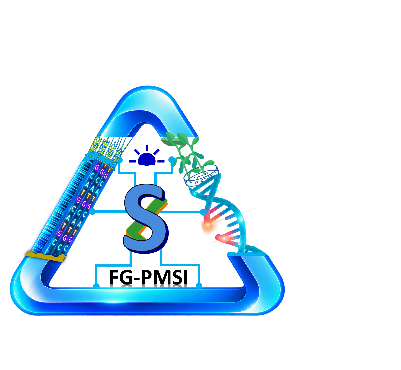

Solanki Lab
Functional Genomics: Plant-Microbe-Soil Interactions (FG-PMSI)
Contents
Download Lab Guidelines as PDF
1. Lab Philosophy
The Solanki Lab works across multiple areas of plant science, including functional genomics, plant-microbe-soil interactions, plant disease resistance, biotechnology, field research, laboratory experimentation, advance imaging, and computational data analysis.
Because our research is diverse, students may be involved in very different types of work. Some may spend more time in the field, some may focus on wet-lab experiments, and others may work extensively with genomics, bioinformatics, imaging, or computational analysis. For this reason, we value an open culture of communication, discussion, and collaboration. Everyone should feel comfortable asking questions, sharing ideas, discussing problems, and learning from each other. At the same time, each person should respect the scientific focus, responsibilities, and expertise of other lab members. Our goal is to build an environment where everyone can develop independent scientific thinking while also benefiting from the knowledge and experience of the group.
2. Open-Door Policy
- I follow an open-door policy in the lab. If my office door (Ber Ag Hall 251) is open an I am there, please feel free to come in.
- Even if the door is closed, you are always welcome to stop by for exciting research results, good news, or anything related to your research or professional development.
- At times, however, I may need uninterrupted time to focus on grant writing, reporting, teaching, research, outreach, or other university responsibilities (too much fun!!). During those periods, I may keep my door closed so I can concentrate. In that case, please send me an email or message and schedule a convenient time to meet.
- I typically do not send emails late at night or during weekends, nor do I expect responses during those times, unless urgent communication is needed for issues such as instrument failure, critical experiments, or time-sensitive data needs.
- I want everyone in the lab to feel comfortable approaching me while also understanding that a scheduled meeting works better.
3. Communication and Email
Clear and timely communication is important for the smooth functioning of the lab.
- Whenever a lab-related communication is sent, either individually or through the FGPMSI group, please make sure to respond.
- We generally expect a response within 24 hours, unless you are occupied with an important research activity, travel, teaching, or personal matters.
- As the lab PI, I also try to respond to emails and messages within 24 hours.
- If I happen to miss an email or message and the matter is urgent, please feel free to remind me in person or follow up directly.
- For urgent matters involving experiments, equipment, plant care, safety, or other time-sensitive issues, clearly indicate the urgency.
- Keep project-related communication clear and professional, particularly when communicating with collaborators, staff, faculty, or external researchers.
- Keep the PI informed about important communication involving collaborations, manuscripts, research materials, data sharing, or major project decisions when appropriate.
4. Lab Meetings
We have a weekly lab meeting, typically lasting about two hours.
The format alternates between paper discussion and more detailed research discussion.
- Every alternate week, one student selects an important paper related to their research and leads the discussion.
- During the alternate research-focused meeting, selected students present their ongoing research in more detail.
- In every lab meeting, irrespective of the main presentation or discussion, all students provide a short update using approximately two slides.
The two-slide update should include:
- work completed during the previous week;
- important data or results generated;
- plans for the coming week; and
- the broader research plan for the month.
The purpose of these meetings is to share data regularly, identify problems early, discuss experimental ideas, and receive scientific input from the group. Because our lab works across field, laboratory, molecular, imaging, and computational research, these meetings are also an opportunity to learn from projects outside your immediate research area.
5. Lab Etiquette and Shared Responsibilities
Everyone is responsible for maintaining a clean, safe, and organized laboratory. Each person is responsible for:
- keeping their own bench and work area clean;
- cleaning the hood after use;
- returning reagents, equipment, and supplies to the appropriate location;
- properly labeling and storing samples;
- disposing of waste appropriately;
- reporting damaged equipment or safety concerns; and
- not leaving materials in disorganized or inappropriate locations.
Lab Police
The lab uses a rotating Lab Police roster, with responsibility changing approximately every 15 days.
The role of Lab Police is to identify problems and help with the general maintenance and organization of the lab. Lab Police does not mean taking care of everybody else's responsibilities.
During their rotation, Lab Police should help monitor:
- overall laboratory cleanliness and organization;
- Maintaining molecular and field associated lab area rules.
- cleanliness of common areas and hoods;
- trash and waste bins;
- sinks and surrounding areas;
- common supplies and shared spaces;
- required signatures and routine inspection records; and
- laboratory safety items such as fire extinguishers and other required safety checks.
Each individual remains responsible for their own bench, materials, experiments, and general organization.
6. Expectations
As a lab member, you are responsible for taking ownership of your project in accordance with my input, project goals, and your assigned responsibilities. Publications are required before graduation. I am flexible about work timing, but flexibility does not mean that we should have little or no interaction. Please make sure you are around the laboratory during reasonable working hours often enough to interact with me and other team members when needed. Any time within the general work window is usually a good opportunity to work alongside other lab members, discuss experiments, and ask questions. Please organize your work in a way that allows you to make steady progress while maintaining a healthy work-life balance. It is important to:
- set clear goals;
- finish assigned tasks;
- plan your work ahead of time;
- meet project deadlines;
- regularly evaluate your progress; and
- communicate early if something is delaying your work.
At the same time, your professional development should not come at the expense of your personal well-being. Think about what you want to achieve in the long term and work consistently toward those goals, while also making time for your family, loved ones, and personal life.
I strongly believe that enjoying your work is important. When you are genuinely interested in what you are doing, research becomes less about counting hours or days and more about completing meaningful tasks and making progress. Some stages of research may require additional time and effort, depending on the experiment, deadlines, and your stage of training, but this should be managed thoughtfully and sustainably.
7. Scientific Independence and Teamwork
Lab members are expected to gradually take greater ownership of their research.
As your experience grows, you should become increasingly independent in:
- planning experiments;
- reading relevant literature;
- troubleshooting;
- analyzing data;
- interpreting results; and
- identifying the next scientific question.
At the same time, independence does not mean working in isolation.
Because the lab includes people with different expertise, students are encouraged to help one another, discuss methods, share technical knowledge, and collaborate when appropriate. Scientific disagreement is welcome when it is respectful and supported by evidence or reasoning.
8. Larger Equipment and Shared Facilities
Please use them responsibly and leave them in appropriate condition for the next user.
BZX-1000 and Imaris
Before using BZX-1000 equipment:
- ask or inform the person responsible for the instrument;
- complete appropriate training before independent use;
- check that the microscope, computer, accessories, and surrounding area are in proper condition before starting; and
- after use, make sure everything is returned to its appropriate condition.
If you notice any problem before, during, or after use, please report it rather than leaving the problem for the next user.
Greenhouse Use
All greenhouse work should follow the general SDSU greenhouse guidelines. Each researcher is responsible for taking care of their own experiments or arranging appropriate care when they are unavailable. Please:
- maintain appropriate cleanliness and organization;
- clearly label all experimental materials;
- keep plants and trays within the assigned space;
- clean work areas after use;
- dispose of plant material and soil appropriately; and
- follow greenhouse requirements related to plant care, sanitation, and shared space.
Growth Chamber and Misting Chamber Use
When using growth chambers or misting chambers:
- make the appropriate entry in the usage log;
- clearly identify the user, experiment, and materials;
- maintain cleanliness inside and around the chamber;
- avoid introducing soil, debris, or other materials into water reservoirs or misting systems;
- clean spilled soil, plant debris, trays, and unused materials after use; and
- report problems involving temperature, humidity, lighting, water supply, or other chamber functions.
Please leave the chamber in suitable condition for the next person.
9. Research Records and Data
Every experiment should be documented well enough that another lab member could understand what was done and reproduce the work.
Records should include, where applicable:
- experimental objective;
- date;
- sample identity;
- treatments and controls;
- replication;
- protocol;
- raw-data location;
- analysis method;
- important observations;
- conclusions; and
- next steps.
Raw data should not be selectively altered or removed because they do not fit the expected result.
Mistakes can happen. Hiding a mistake is far more serious than making one.
Large computational datasets, HPC use, data organization, and data-transfer procedures will be covered separately in the Solanki Lab HPC and Data Management Protocol.
10. HPC Data Storage and Transfer
We have a joint lab directory (folder) /mmfs1/scratch/jacks.local/SolankiLab/ in SDSU’s Innovator cluster in HPC and active lab members have their own subdirectory (I have master access to all). Because HPC storage is a paid lab resource, data should be kept on the HPC /scratch only while they are actively being analyzed. For active projects, sequencing, imaging, digitized field evaluation scores, and other datasets should be transferred to the appropriate Solanki Lab data-transfer folder.
/mmfs1/scratch/jacks.local/SolankiLab/Data_transfer/Please organize files within clearly named project folders and avoid unnecessary duplicate copies. Once active analysis is complete, the data should not remain indefinitely on HPC storage. Completed project data should be moved to PPMS for long-term storage. Please contact me before moving or archiving completed datasets so that we can confirm the appropriate location and make sure the required files are retained. Please refer to SDSU’s Research Cyberinfrastructure webpage for usage documentation at https://help.sdstate.edu/TDClient/2744/Portal/KB/Category/21847/Research-Cyberinfrastructure
Computer to HPC Using MobaXterm and rsync (alternate: FileZilla, Putty)
For large datasets stored on a Windows computer, MobaXterm and rsync can be used because interrupted transfers can be restarted without retransferring everything. Run the command from the MobaXterm Local Terminal, not from a terminal that is already logged into the HPC.
In MobaXterm, Windows drives normally appear as:
C: → /drives/c/
D: → /drives/d/
E: → /drives/e/Example source path:
E:\AWS_Data_Independent_Copy
/drives/e/AWS_Data_Independent_Copy/Typical transfer command swap for your (swap with your login credentials):
rsync -avh \
--info=progress2 \
--partial \
--append-verify \
--stats \
-e "ssh -l 'shyam.solanki@jacks.local' -o ServerAliveInterval=60 -o ServerAliveCountMax=10" \
"/drives/e/AWS_Data_Independent_Copy/" \
innovator.sdstate.edu:/mmfs1/scratch/jacks.local/SolankiLab/Data_transfer/PROJECT_FOLDER/Globus Transfers
For very large datasets or transfers between institutions, Globus is preferred when an appropriate endpoint is available. Confirm the source endpoint, the correct Solanki Lab destination folder, and available storage before starting. After completion, check the Globus transfer report for failed or skipped files.
General HPC Data Expectations
- Keep only actively analyzed data on HPC.
- Use the Solanki Lab Data_transfer folder for active incoming and working datasets.
- Avoid unnecessary duplicate copies of large datasets.
- Do not delete source data until the transfer has been verified.
- Once analysis is complete, contact me and move the data to PPMS for long-term storage.
- Do not delete or relocate another lab member’s shared data.
11. Authorship and Scientific Credit
Authorship should reflect genuine scientific contribution. Contributions may include:
- project design;
- experimental work;
- computational analysis;
- methodology development;
- data interpretation;
- writing; and
- substantial manuscript revision.
Authorship order may evolve as a project develops and contributions change. Scientific credit should be discussed openly and fairly.
12. Safety and Compliance
All required university and laboratory safety training must be completed before beginning relevant work. Everyone is responsible for following applicable:
- laboratory safety requirements;
- chemical safety requirements;
- biosafety procedures;
- greenhouse guidelines;
- pathogen-handling procedures;
- recombinant DNA requirements; and
- other relevant university policies.
If you are unsure whether an activity requires training, permission, or approval, please ask me before proceeding.
13. Professional Development
Training in the lab should extend beyond simply completing experiments. Lab members are encouraged to develop skills in:
- scientific writing;
- oral presentations;
- experimental design;
- statistics;
- computational biology;
- grant and fellowship writing;
- collaboration;
- mentoring;
- leadership; and
- scientific communication.
The goal is progressive independence: from learning how to perform experiments to developing scientific questions, designing studies, interpreting results, and communicating science confidently.